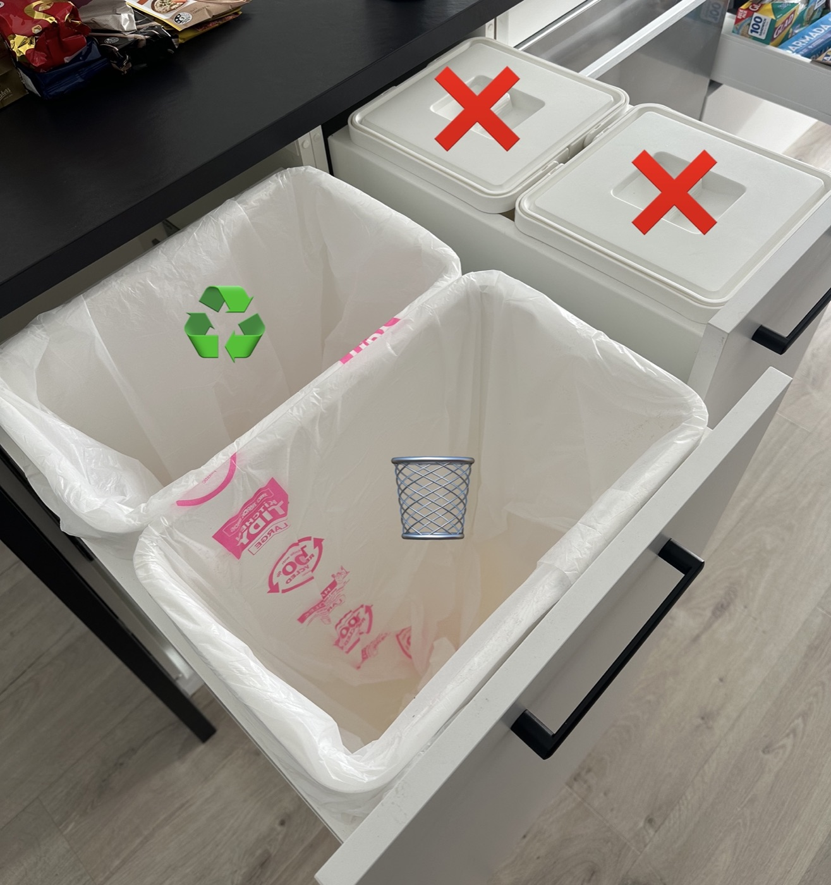
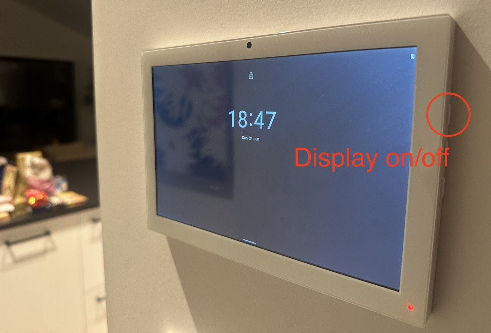
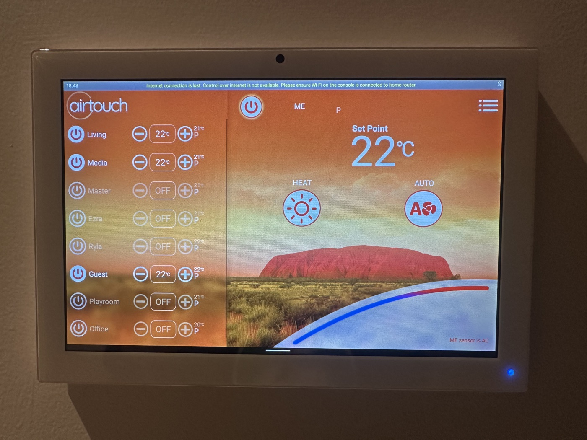
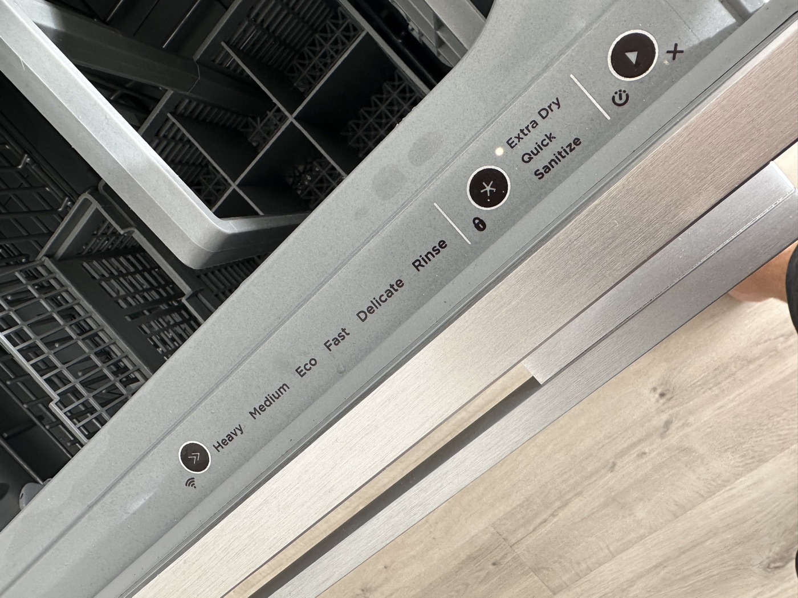

Thanks so much for looking after the place. Below is everything you should need. If anything is unclear or goes wrong, message us any time — no question is too small.
🗑️ Bins & rubbish
The kitchen has a pull-out drawer with two bag-lined bins:
- Front bin = rubbish. Everything general goes here, including food scraps.
- Back bin = recycling.
We don't compost just yet, so food scraps go in the rubbish. The two lidded bins next to the rubbish (marked ✗ in the photo) will be for composting down the track — they're not in use right now.

When a bin is full, empty it into the wheelie bins via the garage back door:
- Rubbish: tie off the bag, drop it in the red-lid bin outside, and put a fresh bag in.
- Recycling: tip the recycling loose into the yellow-lid bin outside, then bring the recycling bin back inside with its bag liner still in — no need to replace it.
Please don't put down the drains
We're on a wastewater system that's expensive to service if the wrong things make their way into it outside, so please be careful here:
- Toilet: only toilet paper — nothing else, please.
- Sink: no grease or fat. Let cooking oil/fat from pans cool and scrape it into the rubbish bin instead.
Side door at night
There's an outside light by the garage side door you can leave on if you need to head out there after dark. Take care — the little deck area by that door gets slippery when it's been raining.
🔥 Ducted heating (AirTouch)
Please use the heating whenever you like — it's controlled from the iPad on the wall, on your right as you come into the kitchen.
One kind ask: heating is by far our most expensive energy bill, so please be a little mindful of how much you run it. 🙏
Waking up & unlocking the screen
The iPad is a bit slow and the display can be laggy — give it a moment to catch up after each step.
- Wake the screen by tapping it, or with the Display on/off button — it's the top button on the right-hand edge of the tablet (see photo).
- From the clock/date screen, swipe up from the bottom.
- Enter the passcode 1234 and tap the blue arrow.
- The AirTouch app will open by default.

Turning heating on
- Press the small power button next to each room/zone you want heated (Living, Master, Office, etc.).
- Then press the large power button in the top-centre of the app to turn the system on.
- Only the zones you switched on will be heated.
Please leave the mode on "Heat" and the fan on "Auto" (the two round icons in the middle of the app) — no need to change either.
Try not to forget to turn the heating off with the big power button (top centre) when you head out or don't need it. We haven't set up an automatic on/off schedule — the house is empty most days and those programs are fiddly to explain — so turning it off is a manual job. 🙂

Our suggested settings
- Overnight: set each room you want on to 18°C and let it gently top up. If you set it to 20–23° overnight it gets far too hot.
- You can only change a zone's temperature once that zone is switched on — otherwise it just shows "OFF".
- Daytime (if cold): 22–23°C heats the house nicely.
- The master bedroom and office side of the house gets little winter sun, so they often need heating.
- Heating works best with windows closed and bathroom doors closed (the bathrooms vent through the showers).
🍽️ Dishwasher
Please be careful loading and unloading — the benchtop sits right over the open drawer. That's how the bench got chipped before, and we had to replace the whole bench, so go gently.

To run it:
- Load it up, and rinse dishes well first — we have to be careful about food waste going into our wastewater system.
- Add a dishwasher powder tablet — they're in the drawer under the sink.
- Fast mode with Extra Dry should be on by default for both drawers; if not, just select them.
- Press start.
💡 If there's a power cut
Please let us know if the power goes out. There are a few things that need resetting once it comes back on, and we have a separate checklist for that we'll walk you through.
To get by in the meantime:
- Torches: above the main kitchen fridge.
- Drinking water: in the back scullery, above the fridge.
- Candles: around the house, with a lighter in the scullery drawer.
ℹ️ Other handy things
- Water runs on a pump. When you turn on a tap it takes a moment for the pump to kick in and pressure to build — totally normal.
- Deliveries: couriers usually just leave parcels at the front door and may ring the bell on drop-off. Occasionally one needs a signature.
- Bins: Nikita's parents will put the wheelie bins out and bring them back in on Mondays, so you don't need to worry about bin day.
- Lawns: Rex, who mows for us, may come by to do the lawns while we're away — depending on the weather and how dry the property is. Nothing you need to do.
- Sheets & towels: please just leave your sheets on the bed when you go — we'll sort the washing when we're back. Feel free to use our towels, and leave those out too. (Saves us writing up the washer and dryer! 🙂)
- Cleaning supplies: in the kitchen under the sink, in each bathroom, and there are extra cloths/supplies in the garage.